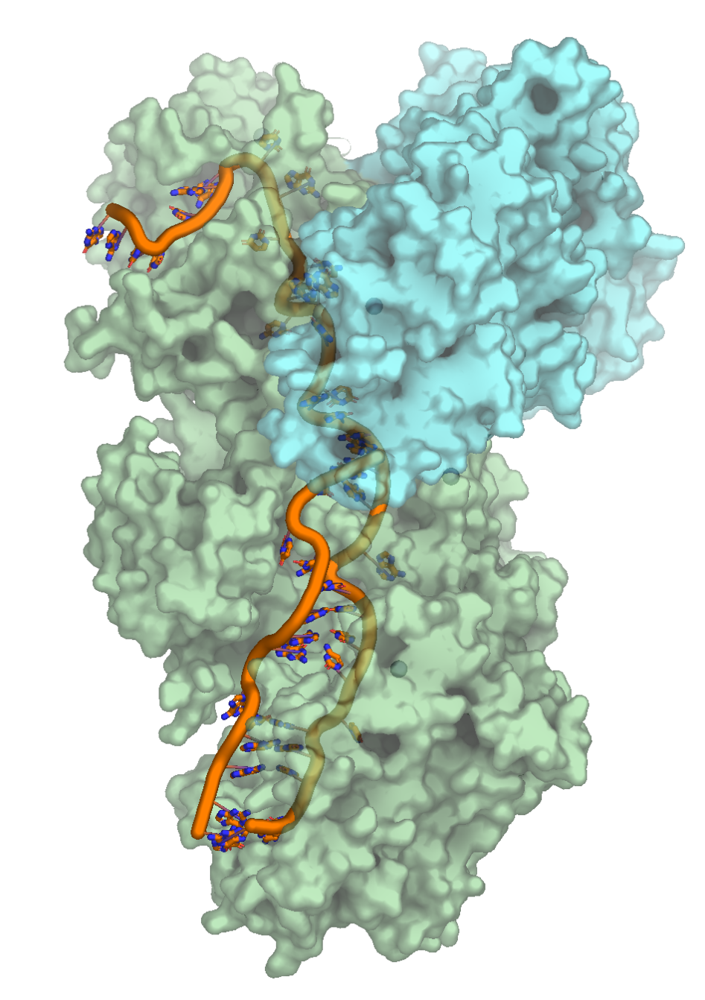
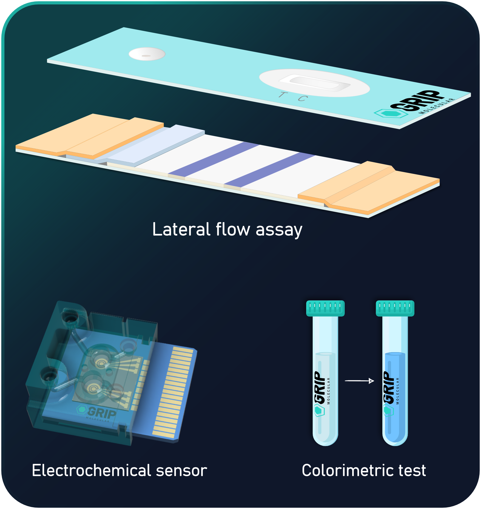
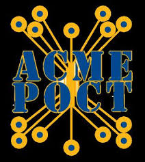

Protease-powered precision
Our next-gen platform uses a CRISPR protease, avoiding false positives from endogenous nucleases.
Pioneering the next generation of diagnostics
Our CRISPR protease-powered RNA detection diagnostic platform is fast, cost-effective, can be performed at home or in a clinic, and doesn't require a nucleic acid pre-amplification step.
The diagnostic delivers molecular-grade performance with the simplicity of lateral flow.

GRIP’s diagnostic platform is built on a CRISPR protease engine. The tests are fast, operate at room temperature, require no nucleic acid pre-amplification, and are readily adaptable to multiple existing readout formats — delivering molecular-grade performance wherever testing is needed.
Our next-gen platform uses a CRISPR protease, avoiding false positives from endogenous nucleases.
With only a ten-minute signal amplification step, get lab-grade results in mere minutes.
Detect viruses, bacteria, or fungi. From common infections to emerging threats.
Saliva, swabs, and urine samples are easily integrated, enabling a variety of sample inputs.
GRIP’s protein-based reagents allow for seamless integration into existing immunoassay manufacturing infrastructure.

GRIP's diagnostic platform brings molecular test precision to multiple readout methods, making the technology adaptable to the differing needs of PON and POC diagnostics. Readout methods include lateral flow assays, electrochemical tests, and even simple colorimetric assays.

Sexually transmitted infection (STI) diagnostics is a US$10 billion/year global market. And yet, fast, accurate, and affordable testing is difficult to access where it’s needed most.
Gold-standard molecular tests like PCR are often centralized, expensive, and slow to deploy. That leaves clinics, urgent care centers, and community health programs without the needed tools to rapidly detect STIs, and prevent transmission.
GRIP’s diagnostic is engineered to bring molecular-grade performance to point-of-need (PON) and point-of-care (POC) settings, helping close the gap between massive testing demand and the need for fast, actionable results.
Michael Osterholm PhD, MPH
University of Minnesota Regents Professor,
McKnight Presidential Endowed Chair in Public Health; Author;
Clinical Advisor, GRIP Molecular Technologies, Inc.
“There is a need for next-generation medical diagnostics that can be performed by anyone, anywhere, at any time, that provide results of a quality only available today via time and resource consuming test methods and equipment. This would position the healthcare system to respond differently to a future pandemic situation. The GRIP team and their collaborators are working to develop this type of innovative diagnostic technology.”
— Michael Osterholm, Ph.D., MPH
